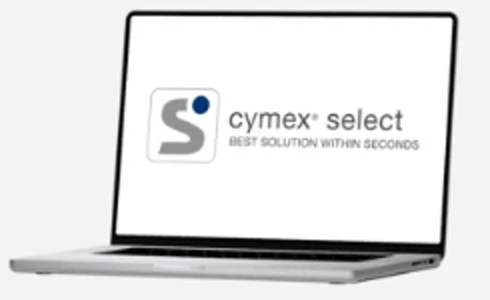
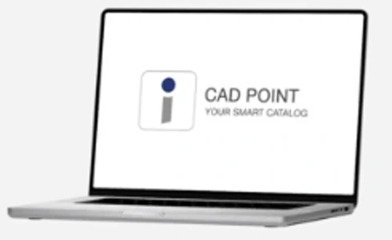
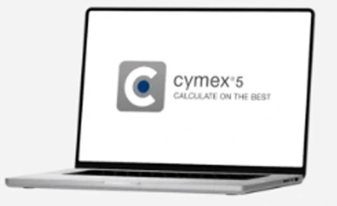

DRIVE DESIGN TOOLS
어떤 설계를
시작하시나요?
목적을 선택하면 알맞은 공식 도구로 바로 이동합니다.

빠른 감속기 선정 cymex® select 바로 시작
CAD · 도면 · 기술자료 CAD POINT 자료 찾기
드라이브트레인 상세 계산 cymex® 5 안내 · 다운로드각 버튼은 WITTENSTEIN 공식 도구 또는 공식 제품 안내 페이지로 연결됩니다.